In October 2025 I was given the opportunity to present an XR artwork at SXSW Sydney. This was an interactive installation where a virtual still-life scene (shown in the painting frame) was lit in real-time by light from the real, physical environment.
This was the first time I've ever exhibited one of my artworks in a physical, public space. It was very rewarding seeing the number of people come through and the interest they took in experimenting with the space and trying to work out the 'trick'.
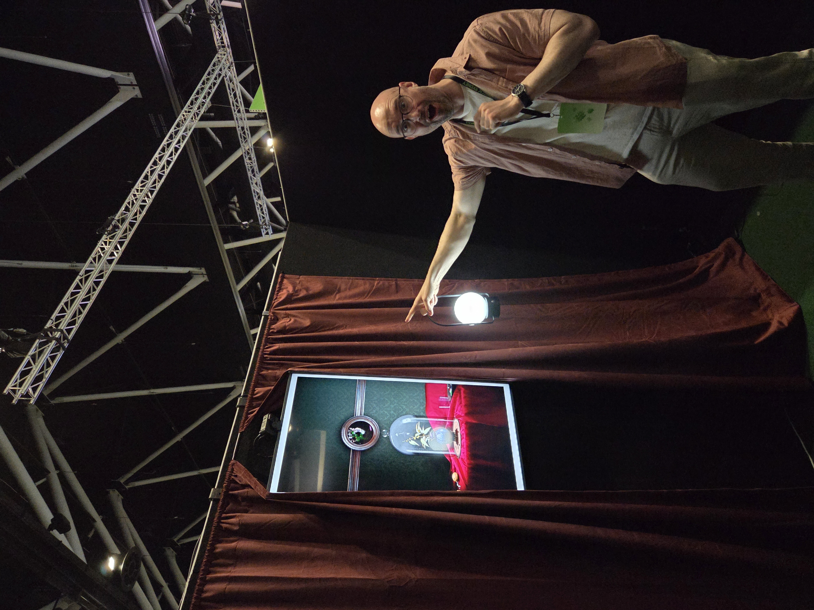
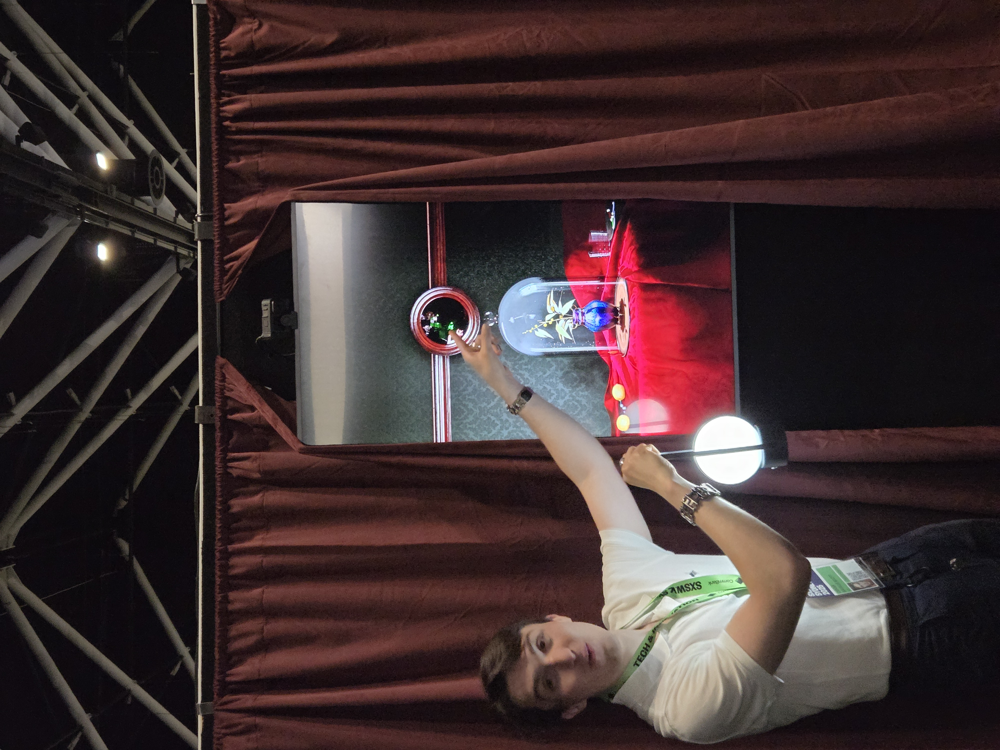
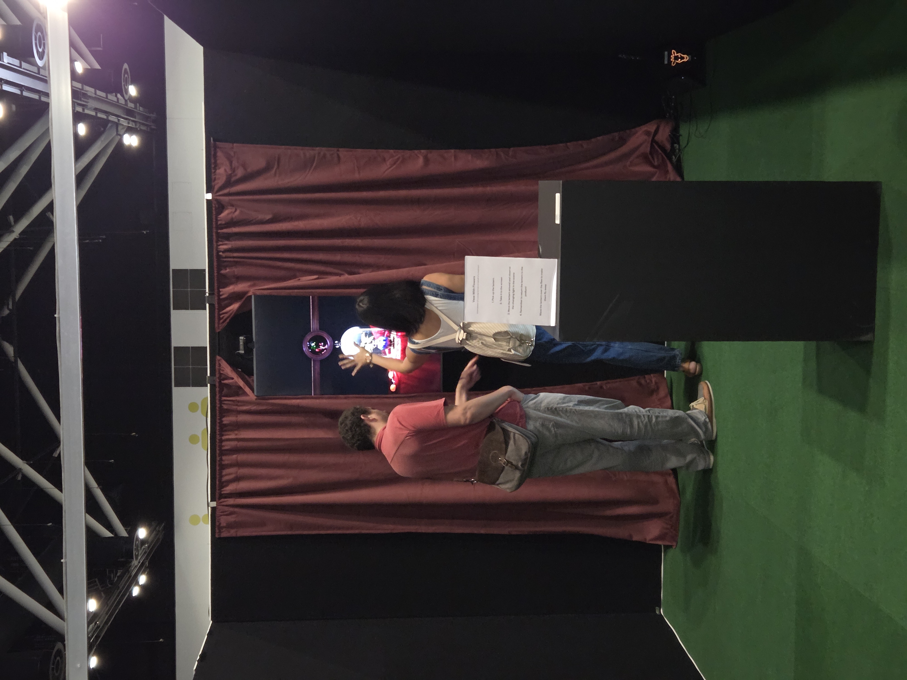
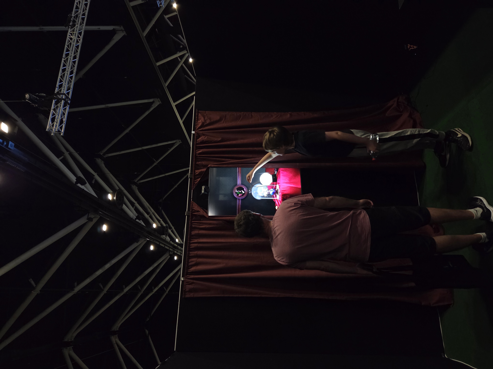

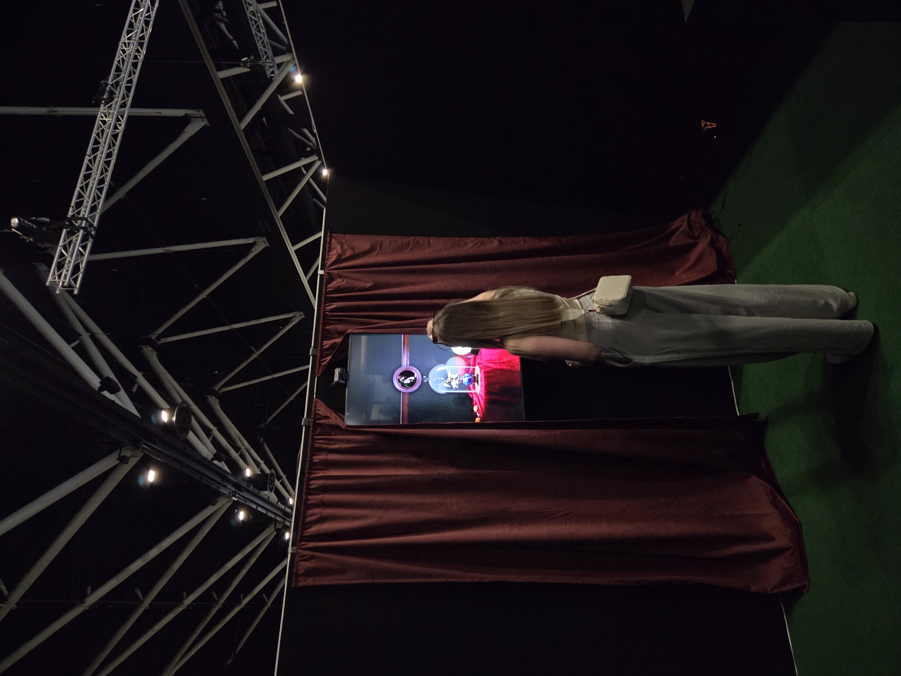
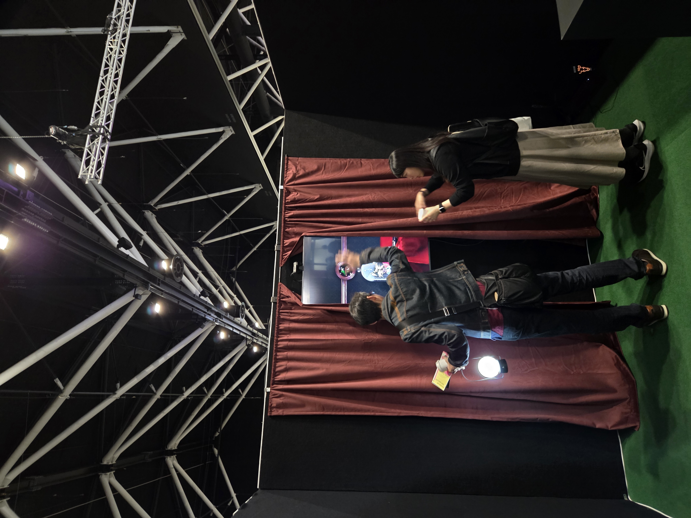
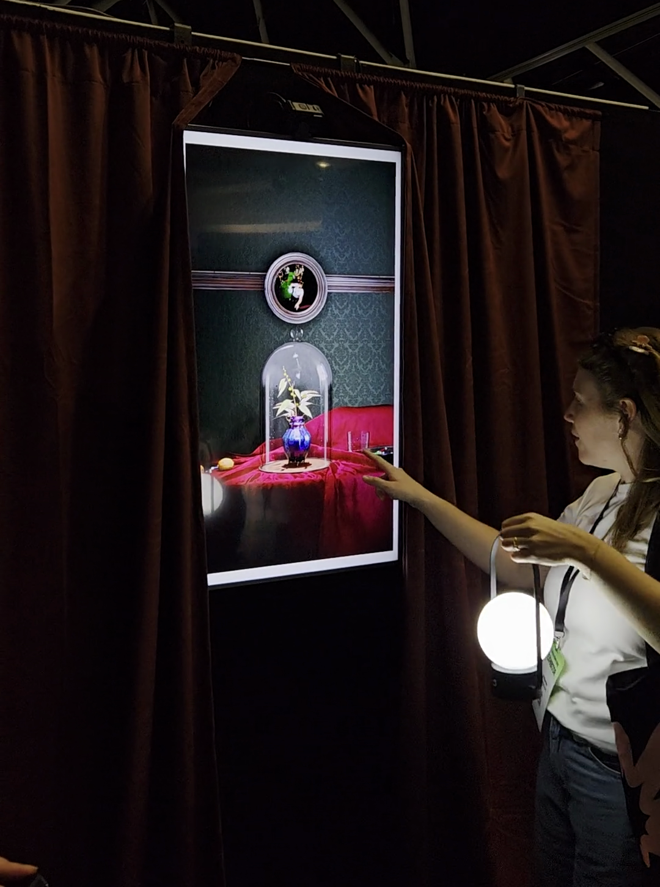
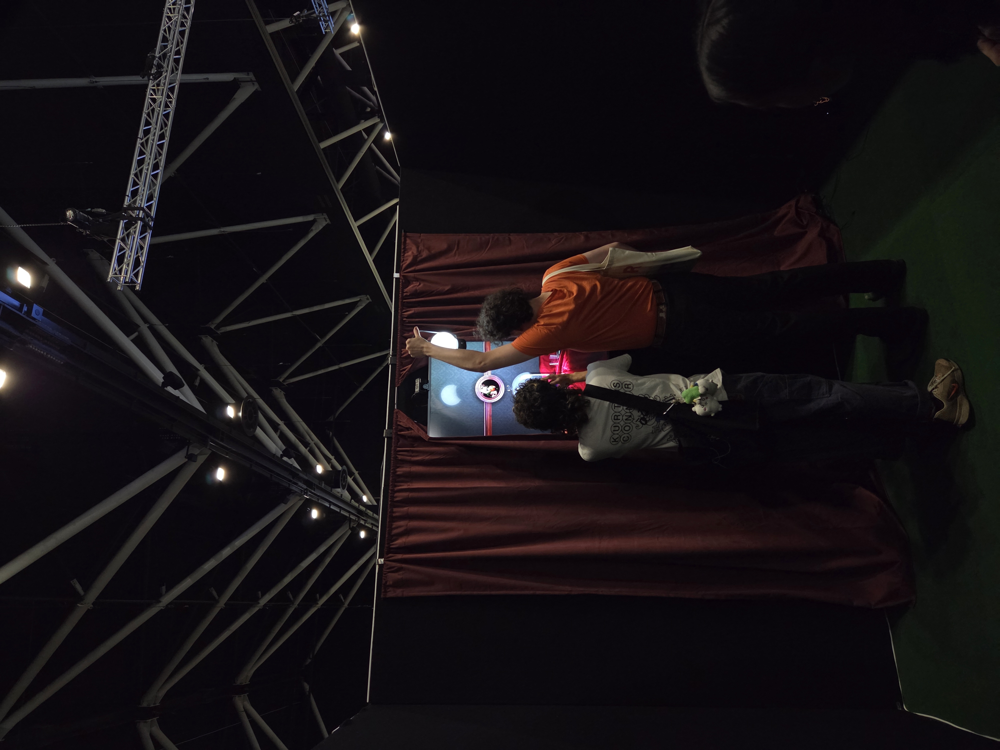
Concept
This piece was originally a form and material study of a vase by Tiffany Furnaces I saw in the NY Metropolitan Museum in 2024, with the wider still life and interactive/XR elements developing from the original study. I wanted to develop an idea that had been brewing for quite a while, that the stereotypical imagery of 'Australiana' is entirely disconnected from the reality of my life. 'Australiana' embodies the romantic idea of a harsh and unforgiving land, beautiful yet deadly in its ruggedness, populated by bushmen, survivalists and explorers who live light as isolated self-sufficient supermen. This contradicts the reality of Australian culture: the product of a highly urbanised, wealthy, and centralised people, where the vast majority of our population lives in one of a handful of capital cities.

This reflects my broad experience growing up, of abundance that is nevertheless slightly tired and outmoded. Of drought, water restrictions, dry dusty school paddocks, ancient school computers (and terrible internet). But also of mangoes and cherries; large, beautiful houses, and a general sense of invincibility - that none of the world's problems could touch us.
The Technical Details
The exhibit consists of a program I wrote in Unreal Engine, a screen, a camera attached to the screen, and a light source.
I used a BlackMagic UltraStudio to accept an HD 60fps HDMI feed from a GoPro camera into Unreal. This media source is used as a rect light source texture positioned behind the scene's virtual camera, so that the video feed is projected back onto the scene as a light source. In this way, changes to the light that is cast onto the screen (or as best approximated by what the camera sees) are reflected in the virtual scene as relative increases or decreases in emitted light.
In a simpler (but not quite correct) way, every pixel in the video is cast back into the scene as its own 'photon' of light, and bounced and traced to compute the resulting lighting and shadows.
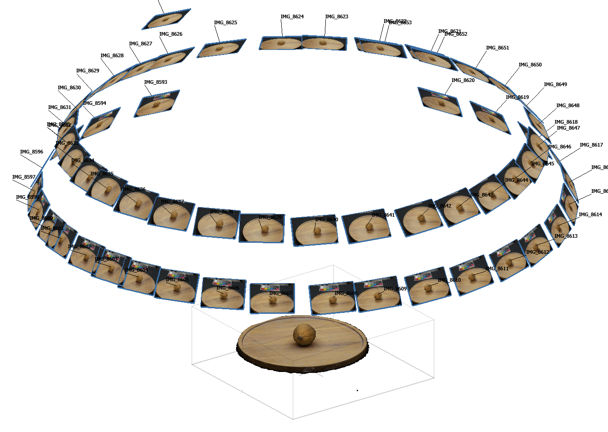
This project was also an opportunity to experiment with Unreal's new Substrate material framework, which supports advanced effects such as layering and multiple scattering, rough refraction, and glints. The vase with made of a material called 'Favrile glass', a Tiffanny Furnaces signature made by acid etching glass. This results in an incredibly unique (and beautiful) iridescent effect that shifts and changes with light and view angle, and a soft, speckly appearance.
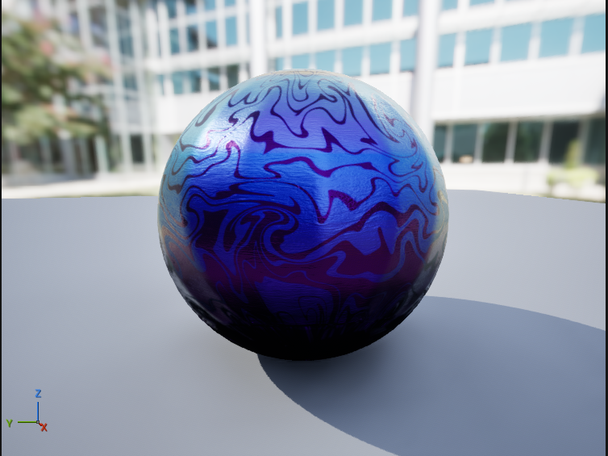
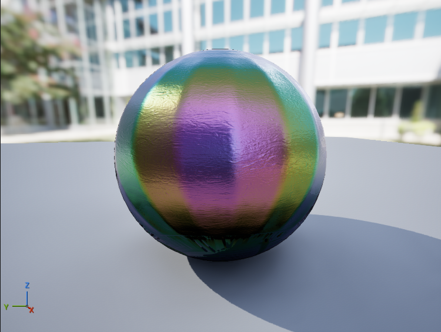
The vase has a 2-layer topology. A painted, base layer and a uniform clearcoat layer for glints and iridescence. The base layer uses a specular profile to twist the reflected specular light towards a deep purple at about 63 degrees incidence. The top layer uses a thin-film iridescence function based on the painted normals to add iridescent haloing around the acid etching in the 'waves' printed onto the vase. There is also a very slight glint added to give a speckled appearance under direct light.
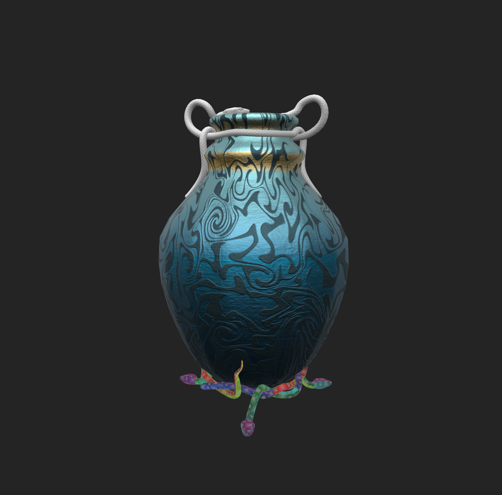
The iridescent layer is very subtle, and appears mostly as a greenish-gold hue on bright highlights.
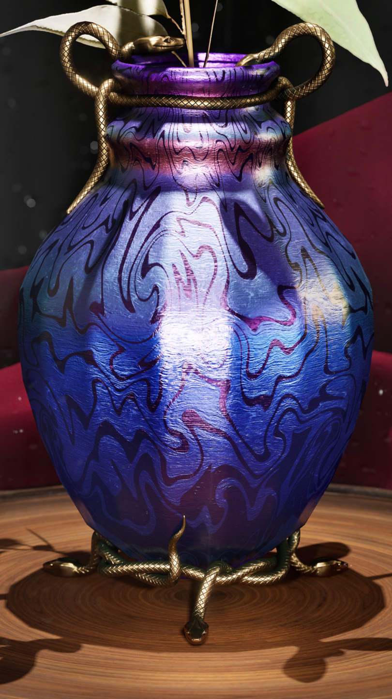
The scene has some flies in the scene. These move around on a pre-programmed track, randomly selecting and playing to a set of pre-programmed pause points on a random, timed loop. The loop is interrupted by any significant change in the light around the fly, at which point it will fly off screen (and return after a certain time), to 'react' to a perceived threat.
I wrote a simple compute shader that performs a basic prefix sum to compute the average luminance within a screen-space region on screen, and takes a smoothed delta of the value across previous frames to determine whether to send a 'fly away' signal. This means that fast or large movements will trigger the animation, while slow ones will not.
float2 UVMin; float2 UVMax; float2 NumThreads; float3 GroupCount; int Debug; Texture2D<float4> Input; RWTexture2D<float4> DebugSceneColor; RWBuffer<float> OutLumaScale; [numthreads(THREADS_X, THREADS_Y, 1)] void LightingAnalyzerShader(uint2 DispatchThreadId : SV_DispatchThreadID, uint3 GroupIndex : SV_GroupID) { //get sample coords float2 NormalisedExecIndex = ((float2)DispatchThreadId) / NumThreads; float2 CorrectedUVMin = ScreenAlignedUV(UVMin); float2 CorrectedUVMax = ScreenAlignedUV(UVMax); float ThreadU = lerp(CorrectedUVMin.x, CorrectedUVMax.x, NormalisedExecIndex.x); float ThreadV = lerp(CorrectedUVMax.y, CorrectedUVMin.y, NormalisedExecIndex.y); float2 ThreadUV = float2(ThreadU, ThreadV); //float4 SceneColor = 0.0.xxxx; float4 SceneColor = Input.Sample(GlobalPointClampedSampler, ThreadUV); const float4 LumaCoefficients = float4(0.2126, 0.7152, 0.0722, 0.0); float Luma = Luminance(SceneColor.xyz); uint FlattenedGroupID = GroupIndex.x + GroupCount.x * (GroupIndex.y + GroupCount.z * GroupIndex.z); float LumaSum = WaveActiveSum(Luma); if (WaveIsFirstLane()) { OutLumaScale[FlattenedGroupID] = LumaSum; //OutLumaScale[FlattenedGroupID] = Input.Load(uint3(DispatchThreadId.x, DispatchThreadId.y, 0)); //Input[DispatchThreadId.xy] = float4(100.0, 0, 0, 0); } if (Debug > 0) { uint2 DebugCoords; DebugSceneColor.GetDimensions(DebugCoords.x, DebugCoords.y); uint2 UAVCoords = (int2) (ThreadUV * DebugCoords); //uint2 UAVCoords = DispatchThreadId; DebugSceneColor[UAVCoords] = LumaSum.xxxx + float4(10.0, 0.0, 10.0, 0); //DebugSceneColor[UAVCoords] = float4(CorrectedUVMin, 0.0.xx); } }
The shader is inserted as a pre-post process pass with the SceneViewExtension interface. It accepts a screen region in UV coords and a thread count. The UV region is derived from a simple screen-space square around the fly's origin. Threads are distributed evenly across the UV region and a buffer is allocated such that wave intrinsics can be used to atomically sum and write the luminance value for its wave bin. This means I dispatch only a single wave per thread-group. Because the resulting samples were relatively few (1024 samples), the final sum + average is computed on the CPU in a simple linear scan.
Acknowledgements
I'd like to thank my friends, family and colleagues for attending and supporting my exhibit. In particular, I'd like to shout-out:
- Michael Pham, for having my back on exhibit planning, setup and logistics
- Hugh Guest, for his technical advice on hardware and VP.
- My employer, for generously loaning hardware for the exhibit.